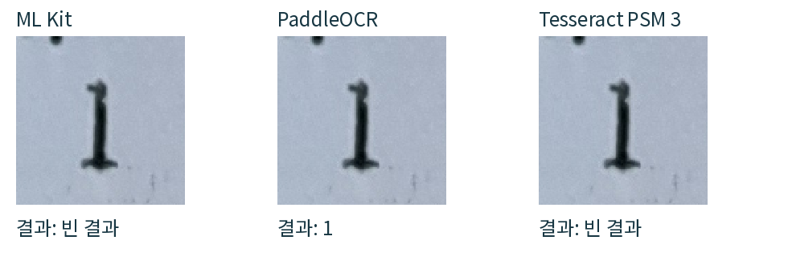
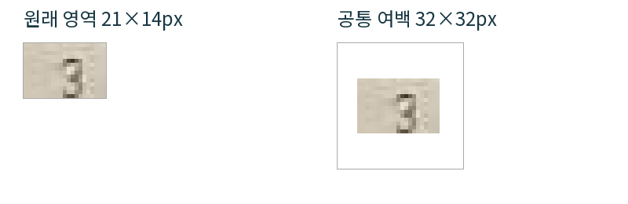

영수증에서 상품·수량·금액을 읽고 구매 가격을 기록하는 앱
| 문서 정보 | 내용 |
|---|---|
| 과목 | 고급모바일프로그래밍 |
| 작성 주체 | 얼마였지 개발팀 |
| 작성일 · 버전 | 2026년 10월 11일 · v1.0 |
| 범위 | 온디바이스 AI 기술 · 영수증 OCR 구현 · 독립 비교 시험 |
| 구현 기준 | how-much-ocr / 기준 커밋 037fe0a |
| 실험 브랜치 | test/receipt-ocr-models |
ML Kit 한국어 OCR을 현재 앱의 온디바이스 인식기로 사용한다. 영수증 사진에서 글자와 위치를 읽고, 사용자가 상품·수량·금액을 확인한 뒤 구매 가격을 기록한다.
교보·삼선 원본 상품 21개의 수량 단독 영역은 PaddleOCR 21/21, ML Kit 1/21이었다. 같은 원본의 전체 사진에서 수량 위치와 값을 함께 검출한 성적은 ML Kit 15/21, PaddleOCR 7/21이었다. 이 차이 때문에 전체 모델 교체를 즉시 채택하지 않았다.
ML Kit는 Android 에뮬레이터에서 실제 네이티브 인식기를 실행했다. PaddleOCR·Tesseract는 Ubuntu 호스트에서 실행했다. 휴대폰 속도·발열·메모리의 모델 간 우열은 측정하지 않았다.
이 보고서는 온디바이스 AI 기술과 영수증 OCR 구현·검증만 다룬다. 핵심 요구는 사진에서 한국어 상품명·수량·금액을 위치와 함께 읽고, 사용자가 근거 영역을 확인할 수 있게 하는 것이다.
| 구성 | 실제 역할 | 확인 근거 |
|---|---|---|
| 학습된 OCR 모델 | 사진에서 글자·글줄·위치를 반환 | ocr_service.dart / 한국어 ML Kit |
| OCR 후처리 | 숫자 정규화·행 구성·상대 위치 연결 | receipt_ocr.dart / receipt_automatic.dart |
| 사용자 검토 | 영역 선택·재인식·직접 수정·불확실한 항목 제외 | 영수증 선택·영역·검토 화면 |
사진에서 글자를 판독하는 부분이 학습된 OCR 모델의 추론이다. 상품 위치 연결 규칙과 개당 가격 계산도 앱이 작성한 일반 프로그램이다.
ML Kit·PaddleOCR·Tesseract는 실제 사진으로 독립 시험했다. LiteRT·MediaPipe·ExecuTorch·ONNX Runtime·Apple Foundation Models는 문헌 조사만 했다. 추론 런타임과 OCR 엔진을 구분하고, 실측하지 않은 기기 성능은 비교 우열로 주장하지 않는다.
참조 강의 자료: 온디바이스AI.pdf. 구현·시험 기준일: 2026년 10월 11일.
이 앱의 우선 요구는 한국어 영수증 글자와 위치를 얻는 것이다. OCR 엔진, 범용 추론 런타임, 생성형 언어 모델 API는 서로 다른 역할을 가진다. 런타임을 설치하는 것만으로 영수증 OCR이 완성되지는 않는다.
| 기술 | 역할과 적용 방식 | 현재 상태 |
|---|---|---|
| ML Kit | 모바일용 텍스트 인식 API. 한국어 네이티브 인식기로 글자·위치 획득[1] [2] | 앱 채택·Android 실제 시험 |
| PaddleOCR | 텍스트 검출·인식 모델 구성. 한국어 mobile 모델 및 Android 배포 경로 확인[4] [5] | 호스트에서 독립 시험 |
| Tesseract | 학습 데이터 기반 OCR 엔진. 한 줄·한 글자 모드와 숫자 제한 가능[6] [7] | 호스트에서 독립 시험 |
| LiteRT | Google의 경량 모델 추론 런타임. 적합한 모델을 준비하여 실행[8] | 문헌 조사 |
| MediaPipe | 이미지·영상 분석 등을 위한 고수준 작업 API와 도구[9] | 문헌 조사 |
| ExecuTorch | PyTorch 계열 모델을 모바일·엣지 장치에서 실행하는 도구[10] | 문헌 조사 |
| ONNX Runtime | ONNX 모델을 Android·iOS 등에서 실행. 변환·연산자 지원·장치 성능 확인 필요[11] | 문헌 조사 |
| Apple Foundation Models | Apple의 언어 모델 기능을 앱에 연결하는 프레임워크. 이미지 OCR의 직접 대체재로 시험하지 않음[12] | 문헌 조사 |
영수증 사진은 개인의 구매 정보를 담으므로 사진을 서버에 보내지 않고 인식하는 구조가 적합하다. 다만 모델 결과는 정답으로 보장되지 않는다. 수량·금액과 원본 영역을 사용자가 확인하고 고칠 수 있게 한다.
LLM을 도입하면 문맥 해석을 시도할 수 있지만, 영수증 숫자의 정확성과 근거 좌표를 보장하는 문제가 남는다. 이번에는 LLM 추론·미세학습을 구현하거나 시험하지 않았다. NPU 가속 여부도 측정하지 않았다.
기존 Flutter 패키지 google_mlkit_text_recognition 0.16.0을 사용한다.
Android에는 com.google.mlkit:text-recognition-korean:16.0.1을 포함하고,
Dart에서 한국어 인식기를 생성한다. 모델을 앱에 포함하는 방식은 별도 첫 사용 모델 다운로드를 요구하지 않는다.
[1] [3]
final recognizer = TextRecognizer(
script: TextRecognitionScript.korean,
);
try {
final result = await recognizer.processImage(
InputImage.fromFilePath(photoPath),
);
for (final block in result.blocks) {
for (final line in block.lines) {
for (final word in line.elements) {
// 글자와 같은 사진 기준의 위치를 함께 보존한다.
saveToken(word.text, word.boundingBox);
}
}
}
} finally {
await recognizer.close();
}
위 코드는 연결 구조를 간추린 설명용 예시다. saveToken은 설명용 함수이며 실제 실행 코드는 app/lib/ocr_service.dart와 receipt_ocr.dart에 있다.
| 앱 데이터 구조 | 보존하는 정보와 목적 |
|---|---|
| ReceiptOcrToken | 원문·위치별 ID·Rect·각도. 같은 숫자라도 다른 위치는 별도 토큰 |
| ReceiptOcrRow | 글줄의 원문과 구성 토큰. 행의 높이·겹침 기준 연결에 사용 |
| ReceiptOcrCandidate | 상품명·숫자 후보, 원문·숫자 값·좌표. 화면 박스와 버튼이 같은 후보를 참조 |
| ReceiptOcrResult | 이번 검토의 사진 바이트와 좌표 후보. 최종 전처리 사진과 좌표를 함께 유지 |
문자열 파서가 상품 초안을 만들지 못해도 인식 원문이 있으면 좌표 후보를 선택할 수 있다. 전체 OCR이 빈 경우에도 수동 영역 지정 흐름에서는 사용자가 직접 입력할 수 있다.
한 장마다 사용자가 첫 상품명·수량·금액을 정한다. 첫 상품명 열과 현재 상품명의 위치를 바탕으로 후속 상품을 찾고, 수량·금액의 상대 위치와 행 정보를 사용하여 연결한다. 전체 OCR의 기존 후보를 보존하며 누락된 수량 열을 보완한다. 상품명·금액 열을 처음부터 다시 검사하지 않는다.
수량·금액이 불확실하거나 누락된 이름도 검토 목록에 남기되, 체크를 해제한다. 가격이 없는 안내·세금·결제 문구를 구매 항목으로 무조건 확정하지 않는다. 누락된 영역의 부분 재인식은 최대 다섯 번 시도하고 첫 유효 성공에서 중단한다.
수동 선택에서는 상품명들을 먼저 고른 뒤 상품마다 금액·수량을 연결한다. 직접 영역의 위치·크기를 조정하고 다시 읽거나 직접 값을 입력할 수 있다. 최대 열 장을 촬영·앨범에서 모으고 각 장의 기준을 지정한 뒤, 모든 장을 마쳤을 때 한 번 검토한다. 사진을 이어붙여 합성하는 방식은 사용하지 않는다.
| 입력 예 | 저장·검토할 값 |
|---|---|
| 금액 80,940원 / 수량 3 | 상품 결제금액 80,940원 / 개당 가격 26,980원 |
| 단가 5,000원 / 수량 3 | 상품 결제금액 15,000원 / 개당 가격 5,000원 |
| 금액 8,000원, 이미 할인 반영됨 | 8,000원을 결제금액으로 유지. 할인액을 다시 차감하지 않음 |
| 수량 누락·모호함 | 임의로 1로 확정하지 않고 검토에서 확인 |
확대·이동 가능한 영수증 사진과 항목 목록을 함께 제시한다. 체크된 항목의 상품명·금액을 피드백 박스로 표시한다. 펜 버튼의 편집창에서 수량을 위·아래 버튼으로 조정하고, 수정 후 “확인했어요”를 누르면 항목을 체크한다. 영수증에서 날짜·항목을 수정할 수 있고, 항목을 다른 상품에 종속시켜 세트 관계를 기록한다.
OCR이 읽은 수량이 다른 상품 행의 숫자인지 확인해야 한다. 사용자 확인 전 후보와 최종 구매 기록은 구분한다. 취소한 편집이 기존 값·영역에 반영되지 않도록 사본을 사용한다.
할인 입력 기능을 추가하지 않았다. 규격의 묶음 수가 있으면 개당 계산에 그 수를 함께 반영한다.
모델을 섞어 인식률을 올리는 시험이 아니라, 각 모델이 동일 입력에서 무엇을 읽고 놓치는지 확인하는 시험이다. 앱의 후보 연결 규칙을 통과시키지 않고 모델의 원문·좌표·점수·예외를 각각 기록한다.
| 엔진 | 고정한 환경과 설정 |
|---|---|
| ML Kit | Flutter 플러그인 0.16.0 / Android 한국어 모델 16.0.1 / Ubuntu Android 에뮬레이터 |
| PaddleOCR | paddleocr 3.4.0 / paddlepaddle 3.2.2 / PP-OCRv5_mobile_det + korean_PP-OCRv5_mobile_rec / 호스트 CPU 4스레드 |
| Tesseract 기본 | 4.1.1 / kor+eng / OEM 1 / PSM 3 자동 분할 / 호스트 CPU |
| Tesseract 추가 | PSM 7 한 줄, PSM 10 한 글자 + 숫자 제한을 각각 별도 실행 |
교보 첫째·둘째 장 원본, 삼선 원본, 트레이더스 저해상도 원본, 트레이더스 선명한 재작성본, 기존 교보 보정 사진, 기존 제로펩시 보정 행을 준비했다. 전처리 사진과 재작성본은 원본과 별도 집계한다.
전체 사진 7건·수량 63건·금액 63건·상품명 21건·행 62건·백지 1건으로 고정 입력 217건이다. 추가 공통 패딩 45건은 별도 시험이다. 사진은 EXIF 방향을 적용한 RGB PNG로 고정하고 SHA-256을 확인했다. 각 모델의 내부 기본 전처리는 다를 수 있다.
숫자는 공백 제거와 천 단위 콤마·점 표기만 정규화한다. I→1 같은 추정 보정이나 다른 모델의 값을 쓰지 않는다. 단독 영역은 값 하나가 정답과 같아야 성공이다. 전체·행 위치 성적은 반환 박스의 중심이 사람이 지정한 정답 영역 안에 있고, 숫자가 유일해야 성공이다.
상품명은 공백·기호·대소문자를 제외하고 완전 일치와 글자 편집 오류율을 계산한다. 모델마다 단어·글줄 박스의 단위가 다를 수 있어 위치 성적은 해당 출력 규약까지 포함한 결과다.
교보 둘째 장의 영역 지정 오류를 시각 확인 후 수정했고, 세 엔진 모두 해당 22건을 다시 읽혔다. 잘못 지정한 이전 결과는 최종 집계에서 제외했다. 코드를 통과한 테스트 수와 정답을 맞힌 수를 구분한다.
아래 표는 교보 첫째 장 8개·둘째 장 11개·삼선 2개, 총 21개 상품 기준이다. 모두 같은 원본 영역을 입력했으며 수량 정답은 전부 1이다. 다른 수량의 일반적인 성능까지 이 표로 판단하지 않는다.
| 입력·검증 항목 | ML Kit | PaddleOCR | Tesseract PSM 3 |
|---|---|---|---|
| 수량 단독 영역 | 1/21 | 21/21 | 0/21 |
| 금액 단독 영역 | 20/21 | 21/21 | 5/21 |
| 전체 사진: 수량 위치·값 | 15/21 | 7/21 | 2/21 |
| 전체 사진: 금액 위치·값 | 19/21 | 21/21 | 2/21 |
| 숫자 행: 수량 위치·값 | 16/21 | 4/21 | 2/21 |
| 숫자 행: 금액 위치·값 | 19/21 | 21/21 | 4/21 |
PaddleOCR는 단독 수량 영역 21개를 모두 읽었다. 하지만 전체 사진에서 같은 수량의 위치까지 찾은 결과는 ML Kit가 더 좋았다. 검출과 판독은 별개이며, 단독 영역의 성공을 전체 사진 자동 입력의 성공으로 볼 수 없다.
| 엔진 | 전체 이름 일치 | 글자 편집 오류율 |
|---|---|---|
| ML Kit | 5/21 | 30/320 = 9.4% |
| PaddleOCR | 9/21 | 33/320 = 10.3% |
| Tesseract PSM 3 | 0/21 | 142/320 = 44.4% |
| Tesseract PSM 7, 별도 | 1/21 | 161/320 = 50.3% |
PaddleOCR는 완전히 맞힌 이름이 더 많았지만, 전체 글자 편집 오류는 ML Kit가 조금 적었다. 상품명 판독 전체에서 한 모델의 우세를 단정하지 않는다.
이번 원본 표에서는 Tesseract의 기본 설정이 불리했다. 이는 설치된 4.1.1·kor+eng·고정 설정의 결과다. 다른 학습 데이터나 튜닝된 설정까지 같은 성능이라고 일반화하지 않는다.
raw JSONL → field-results.csv / summary.json → localization.csv / localization-summary.json. 영수증 수와 상품 수가 적고 같은 사진의 여러 영역을 사용했으므로 독립적인 대규모 표본은 아니다.

같은 픽셀을 입력했다. 그림의 확대는 보고서 표시용이다. 모델 인식 전에 이 확대를 적용하지 않았다.
PaddleOCR는 이 영역에서 1을 반환했고 점수는 약 0.991이었다. ML Kit와 Tesseract 기본 설정은 빈 결과를 반환했다.
| 엔진 | 실제 반환 원문, 줄 구분을 / 로 표시 |
|---|---|
| 정답 | 2,000 / 1 / 0 / 2,000 |
| ML Kit | 2.000 / 0 / 2,000 |
| PaddleOCR | 2,000 / -·-.·. / 2,000 / 0 |
| Tesseract PSM 3 | 0 / 2.000 |
두 주요 모델 모두 이 숫자 행에서는 수량 1을 놓쳤다. OCR 결과의 반환 순서는 항상 영수증의 왼쪽→오른쪽 순서가 아니므로 원문과 좌표를 함께 확인해야 한다.
| 엔진 | 읽은 이름 |
|---|---|
| 정답 | 프리즘 220 라인 밴드 노트/크림 |
| ML Kit | 리즘 220 라인 밴드 노트/크림 |
| PaddleOCR | 크:리즘 220 라인 밴드 노트/크림 |
PaddleOCR 점수는 약 0.924였지만 첫 글자는 틀렸다. 모델이 제공한 점수는 이번 데이터에서 정답 확률로 교정된 값이 아니다. 서로 다른 엔진의 점수를 같은 척도로 취급하거나 높은 점수만으로 항목을 확정하지 않는다.
원문은 results/mlkit.jsonl · results/paddle.jsonl에 보관했다. 값이 없을 때 가상의 확신도를 만들지 않았다.
트레이더스 저해상도 원본은 334×598px이다.
수량·금액·행 크롭 45건은 높이가 32px보다 작아 ML Kit가
InputImage width and height should be at least 32! 예외를 반환했다.
이것은 빈 OCR 결과와 다른 실행 오류다.

각 변이 최소 32px가 되도록 가운데에 흰 여백을 붙였다. 확대·대비 보정·샤프닝은 하지 않았다. 같은 파일 해시를 세 엔진에서 확인했다.
| 공통 패딩 후 결과 | ML Kit | PaddleOCR | Tesseract PSM 3 |
|---|---|---|---|
| 수량 정답 | 2/15 | 7/15 | 0/15 |
| 금액 정답 | 12/15 | 12/15 | 2/15 |
| 45건 실행 오류 | 0건 | 0건 | 0건 |
ML Kit의 최소 크기 예외는 없어졌지만 수량은 15개 중 2개만 맞혔다. PaddleOCR도 7개만 맞혔고, 나머지 8개의 수량에서 잘못된 글자·값을 반환했다. 따라서 “실행된다”, “무언가 읽힌다”, “정답이다”를 구분해야 한다.
금액은 ML Kit와 PaddleOCR가 각각 12/15개였다. 여백 추가가 글자의 원래 정보량을 늘려주는 것은 아니다. 앱 전체 사진의 최대 3배 확대·기울기 보정 흐름에 이 여백 시험을 바로 적용하지 않았다.
추가 네이티브 시험 45건 완료. manifest: padding-manifest.json, 원문: padding-results/*.jsonl, 집계: padding-summary.json. 생산 앱 코드 변경 없음.
| 검증 종류 | 확인한 결과 | 해석의 범위 |
|---|---|---|
| 실제 사진 모델 시험 | 기본 217건 + 공통 패딩 45건. 수정 영역 22건 재시험 | 시험 입력 완료 수이며 정답 수와 다름 |
| 실제 네이티브 ML Kit | Android 에뮬레이터에서 기본·추가 시험 완료 | Paddle·Tesseract는 호스트 CPU 실행 |
| 기존 Flutter 회귀 검사 | 275개 통과 · 기존 1개 건너뜀 | 모의 응답·저장된 좌표 재생·위젯·저장 규약 시험 포함 |
| 정적 검사 | 기존 screens.dart:806 경고 1개 유지 | 기존 경고를 새 모델 시험 실패로 보지 않음 |
| 기존 앱 보호 | 별도 시험 패키지. 원래 설정 바이트 복원 | 앱 데이터 초기화·운영 서버 쓰기 없음 |
| 실기기·iOS 비교 | 이번에는 미측정 | 장치별 속도·메모리·발열·정확도 주장 불가 |
기존 Flutter 테스트에는 합성 ML Kit 응답과 저장된 실제 좌표를 재생하는 시험이 포함된다. 이 테스트 통과는 카메라 사진의 OCR 정확도 100%를 의미하지 않는다. 이번 모델 비교는 실제 사진 파일을 실제 인식기에 입력하여 반환 원문을 기록한 별도의 시험이다.
ML Kit를 현재 앱의 온디바이스 OCR 인식기로 유지한다. 실제 전체 사진의 수량 위치 검출 결과와 이미 연결된 네이티브 구현을 근거로 판단했다. PaddleOCR의 지정 수량 영역 인식은 후속 온디바이스 검증 대상으로 남긴다.
PaddleOCR의 단독 수량 강점은 확인했다. 후속에서는 동일 수량 영역을 Android의 독립 시험 앱에 이식하여, 한국어 모델 변환·연산 지원·앱 크기·실기기 메모리와 정확도를 다시 확인해야 한다. 호스트 결과만으로 기기에서 같은 속도·정확도가 나온다고 가정하지 않는다.
원본 종류·상품 수가 적다. 보정본은 새로운 독립 표본이 아니다. 숫자 위치 채점은 반환 박스 단위에 영향을 받는다. 할인 음수·날짜·용량의 모델별 비교, 최종 자동 연결 성공률·기기별 정확도·발열은 이번 시험에서 측정하지 않았다. 범용 런타임·LLM은 문헌 조사 대상이며 직접 성능 시험을 하지 않았다.
앱 패키지 업그레이드·생산 APK 생성·실기기 설치·커밋·푸시는 하지 않았다. 시험과 PDF 도구의 설치는 /tmp 격리 환경에만 수행했다.
공식 문서 확인일: 2026년 10월 11일. 본문의 번호를 누르면 해당 공식 자료로 이동한다. 제품 설명은 아래 출처, 실측 결과는 프로젝트의 시험 원문을 근거로 한다.
prepare_inputs.py로 원본 PNG와 영역을 생성한다. run_host_models.py로 각 호스트 엔진을 각각 실행한다. ML Kit는 mlkit_comparison.dart를 별도 패키지에서 실행한다. summarize.py와 localization.py로 기본 성적을 집계한다. prepare_padding_inputs.py로 추가 공통 여백을 생성한다. 모든 결과는 입력 해시가 같은지 먼저 검사한다.
버전·모델 해시: environment.json / 호스트 패키지: host-packages.txt. 이 PDF의 HTML 원본·생성 코드·검수 기록은 docs/research/on-device-ai-20261011/에 보관한다.